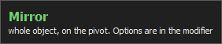

Tools / Mirror
Mirror
One click sets up a live mirror. It stays editable, so you can change it any time.
What it does
Mirror puts the Symmetry 9000 modifier on the selected objects, already set up. Because it is a modifier, the mirror stays live: edit the source side and the other side follows.

How to use it
Open the quad menu (the Q menu) and choose Mirror in its Scripts part.
| Situation | Result |
|---|---|
| Nothing selected in sub-object mode | The whole object mirrors on its pivot. |
| Polygons selected | Only those polygons mirror. |
| Shift+click, or Mirror to Object | You pick another object as the centre. The mirror follows it when it moves. |
When you pick an object, left-click it. Right-click or Esc cancels.
Options
Everything is in the Symmetry 9000 modifier panel:
- A different material ID for the mirrored side.
- A UV offset for the mirrored side.
- Pivot and Middle buttons to set the centre.
Good to know
- Smoothing groups and hard edges come out the same on both sides, including FBX imports with locked normals.
- An object whose mirror plane follows another object can be used as a Boolean operand.
- A source that already uses nearly all 32 smoothing groups leaves no free group to keep a centre edge hard.